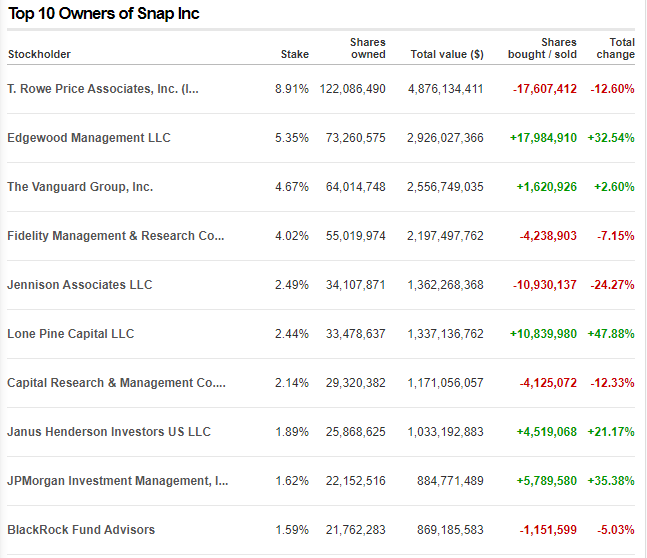

Chapter 6 Snapchat
Snapchat is a popular messaging app that lets users exchange pictures and videos (called snaps) that are meant to disappear after they’re viewed. It’s advertised as a “new type of camera” because the essential function is to take a picture or video, add filters, lenses or other effects and share them with friends.


7.2 Demographic Information
7.2.1 Target Audience
With over 319 million daily active users, Snapchat is mainly targeted towards Millennials and Generation Z [6]. Teens and young adults engage in this platform as the self-destructing image feature takes away the permanence of sharing images online. Individuals of other age groups do not partake as much on this platform, mainly due to the nature of how content is shared. The gender demographics of Snapchat is split quite evenly, with 54.4% of users identifying as females and 44.6% identifying as males.
7.2.2 Connecting with others
Non-users cannot peruse content on the platform. As it is a person-to-person platform, having an account on the app is required. Users connect with each other by adding others as friends, much like other popular messaging platforms like Facebook. They can also subscribe to influencers and pages under the Discover section, found when swiped right from the camera screen. In recent years, Snapchat has allowed users to create group chats consisting of 100 people. Anyone is able to add people to the group even if the admin of the group isn’t their friend.
 Chat and send snaps to friends and groups
Chat and send snaps to friends and groups
7.2.3 Sharing Content on Snapchat
The primary purpose of the app is to share content privately. The app was originally intended to be a person-to-person communication platform. Users send another person a photo/video/text message which disappears after the allotted time set by the sender, has passed. With group chats, people are able to share content with multiple people at once. Users can share ‘Stories’ which are snaps viewable by all their friends, that are only available for 24 hours. Individuals can also create filters and lenses and post them to be used by others in the community, under Lens Explorer. Users can subscribe to their favorite Lens and the creator, to stay up to date with their latest creations.
 Chatting with friends
Chatting with friends
Attaining virality on Snapchat is not like other platforms. Users can post videos up to 60 seconds long onto Spotlight, attaching relevant hashtags and hoping that it gains enough traction for it to go viral. If it does go viral, they can then get paid for it through third-party payment providers. Users can interact with the video by liking and sharing it with friends.
7.2.4 Company Details
Snapchat is owned by Snap Inc. which went public in March of 2017 under the trading symbol SNAP.
 Screenshot from: https://money.cnn.com/quote/shareholders/shareholders.html?symb=SNAP&subView=institutional
Snapchat generates revenue primarily from digital advertising services, which consist of augmented reality ads, Snap Ads and tools to measure advertising engagement.
 Photo from: https://whatisthebusinessmodelof.com/business-models/how-snapchat-makes-money/
Photo from: https://whatisthebusinessmodelof.com/business-models/how-snapchat-makes-money/
7.3 Privacy and Surveillance
7.3.1 Link to Snapchat’s ToS and Privacy Policy
Snapchat’s Terms of Service: https://snap.com/en-US/terms [1] Snpachat’s Privacy Policy: https://snap.com/en-US/privacy/privacy-policy [2]
7.3.2 Key takeaways of Snapchat’s ToS and Privacy Policy
How they gather information
First, they learn about you when you use their service. While you may not tell them you’re a sports fan, if you’re always watching basketball highlights on Discover and your Bitmoji is wearing your team colors, it’s a safe guess.
Second, they learn from whatever information you choose to give them. For example, when you set up a Snapchat account, we learn your birthday, email address, and the unique name you’d like to go by.
Third, they sometimes learn about you from other people and services. For example, if a friend uploads their contact list, they might see your phone number. Or, if you tap on an ad for a video game, the advertiser may let them know that you installed it [3].
How they store information
Snapchat is about living in the moment. That’s why when you send a Snap or Chat, it’s deleted by default after it’s viewed or expires. Messages may remain if you or your friends saves them in chat [3].
Grey areas about Snapchat’s Privacy Policy
Snapchat had a recent privacy policy update where they collect log information such as details about how you’ve used our services, device information such as your web browser type and language, access times, pages viewed, IP address, identifiers associated with cookies or other technologies that may uniquely identify your device or browser and pages you visited before or after navigating to our website [4].
As with any service, it’s important to read the terms of service and privacy policy you agree to. Thankfully, Snapchat’s is written without much of the legal jargon companies frequently use to obfuscate their shady tactics.
7.5 Balancing your PLN and Public Discourse
Famous influencers use snapchat along with other social media platforms to reach as much audience they possible can. For having an active audience, influencers post contents relevant for that social media, in case of snapchat short videos. Educators are now turning into influencers as short informative videos of current affairs can gain a lot of audience. An active connected PLN with verifiable information reaches a broader audience.
7.6 Digital Identity
A digital identity is the body of information about an individual, organization or electronic device that exists online. People present themselves differently online and on social medias based on what they are trying to acheieve. Each platform is different from the others due to their distinct unique selling points.
For example, LinkedIn is the world’s largest professional network on the internet. You can use LinkedIn to find the right job or internship, connect and strengthen professional relationships, and learn the skills you need to succeed in your career [5]. Snapchat, on the other hand, is primarily used for creating multimedia messages referred to as “snaps” that can consist of a photo or a short video, and can be edited to include filters and effects, text captions, and drawings. It empowers people to express themselves, live in the moment, learn about the world, and have fun together.
When someone is in a search for a job online, they would have a professional profile picture along with their qualifications on the business media site, such as LinkedIn, to impress employers to hire them. They would only include career related information on this site. On the contrary, if the same person wants to share some jolly family photos with their friends and family, they would post them on their personal social media site such as Facebook or Snapchat. Facebook and Snapchat are platforms where people share more about their lifestyles.
7.7 Access and Inclusion
In this day and age, with the increased ubiquity of social media platforms, it is imperative to consider accessibility as a feature of these networks. Snapchat is still behind compared to other platforms. in this regard. To make an app, accessible best practices such as the POUR (perceivable, operable, understandable, robust) principles need to be employed [7]. These principles are internationally agreed-upon standards established to aid in designing an application/website
Visually impaired users are affected the most as closed captioning of videos does not exist as of yet. Screen reading/dictation technologies like VoiceOver by Apple can be used in conjunction with Snapchat to mitigate these issues, but are not completely resolved. While users can search for and add friends, view Stories, send and receive messages, they cannot interact with photos and videos that have no words and no audio respectively. Uploading snaps is also difficult in similar regard. The issues outlined above pertain to perception and operability as content is not discernable to all users and certain features are hard to access due to the user’s limitations. Snapchat also suffers from robustness issues, as it is fundamentally a mobile application. It cannot be used on a computer.
Equity in the digital space is everyone’s right, and disregarding accessible design practices is borderline unethical. The accessibility issues facing Snapchat require a big design overhaul. The app’s confusing user interface was put in place intentionally as a way for users to explore and find out different features of the app. It was meant to be fun and engaging, as Snapchat was primarily targeted towards the younger generations. In doing so, the UI/UX designers essentially neglected a part of the population.
7.8 Media Literacy (including Trust and Disinformation)
Snapchat claims that they actively remove false information besides that, they prohibit accounts that promote or distribute age-restricted content. Snapchat protects it’s users by implementing strict content moderation policies. Fact-checking is a great step before posting about information, it protects the individual from spreading false information and gives them credibility.
7.4 Social Media and your PLN in Education
Snapchat users can interact with each other as long as they are friends in the app. Snap is the main feature of Snapchat that users send snaps to each other. Snaps are usually automatically deleted after they have been viewed by all recipients. Influencers and creators stay connected with their fans by posting videos that are less than 60 seconds long. Fans can’t appreciate or favorite snapchat content, but they can share it. Creators can reply to messages from fans as needed.
Educators can use snapchat to share their expertise and create short educational videos on different topics. Short spanned educational videos attracts a broad group of younger audience interested at the subject. Teachers can use snapchat as a PLN by posting a discussion questions at the beginning of the day or even using it as an efficient way to send announcements on materials or schedule for the following day.
Snapchat’s short-lived video feature can be easily exploited for spreading misinformation. However the platform itself have been very strict about their approach against false information as they completely remove it. However, educators can be victim to phishing, spams, etc. as bad actors are always willing to compromise different organizations through their employees. However, by not clicking on unknown links, not replying to unknown people, etc. educators can stay safe.
Snapchat lets user create group which an educator can easily leverage by creating a snapchat group of their PLN. As younger generation is more inclined towards digital delivery of education content, an educator can reach more active audience through this feature. Besides groups, educators can create short videos about different topics, give important announcements, etc.
Snapchat users can interact with each other as long as they are friends in the app. Snap is the main feature of Snapchat that users send to each other. Snaps are usually automatically deleted after they have been viewed by all recipients. Influencers and creators stay connected with their fans by posting videos that are less than 60 seconds long. Fans can’t appreciate or favorite Snapchat content, but they can share it. Creators can reply to messages from fans as needed.
Educators can use snapchat to share their expertise and create short educational videos on different topics. Short spanned educational videos attracts a broad group of younger audience interested at the subject. Teachers can use snapchat as a PLN by posting a discussion questions at the beginning of the day or even using it as an efficient way to send announcements on materials or schedule for the following day.
Snapchat’s short-lived video feature can be easily exploited for spreading misinformation. However the platform itself have been very strict about their approach against false information as they completely remove it. However, educators can be victim to phishing, spams, etc. as bad actors are always willing to compromise different organizations through their employees. However, by not clicking on unknown links, not replying to unknown people, etc. educators can stay safe.
Snapchat let’s user create group which an educator can easily leverage by creating a snapchat group of his PLN. As younger generation is more inclined towards digital delivery of education content, an educator can reach more active audience through this feature. Besides groups, educators can create short videos about different topics, give important announcements, etc.